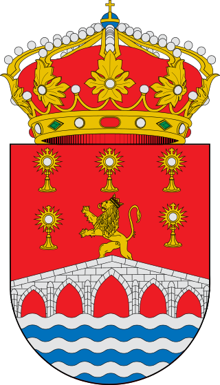

VIVEIRO
Vivero 3 4 (en gallego y oficialmente desde 1982, Viveiro)5 6es un municipio7 y una ciudad española, situado en la provincia de Lugo, en la comunidad autónoma de Galicia 8.Asimismo, está situado dentro de la comarca de La Mariña Occidental, de la cual es su capital. En ella encuentra su sede el partido judicial número 6 de la provincia.9
Su término municipal está ubicado en la región costera conocida como La Mariña, ocupando una superficie de 109,3 km²10.Este territorio se sitúa en el valle formado por el río Landro, que extiende por el sur desde los piedemontes de la sierra del Gistral, y que desemboca al norte en la ría de Vivero, que es una de las rías pertenecientes a la región de las Rías Altas, que desembocan al mar Cantábrico.
